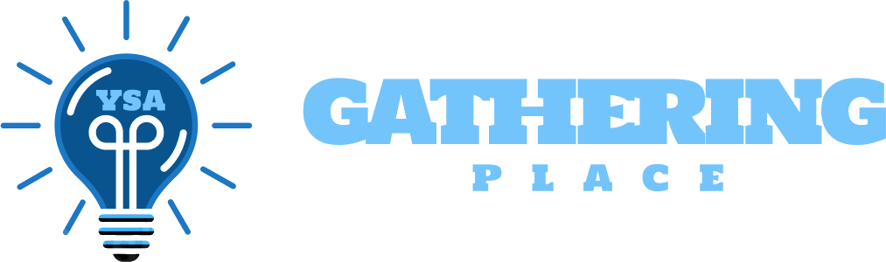

Gathering PlaceYoung Single Adult portal · Ghana
Checking whether it is open
Enter the portalNo account yet?
Register on the portal with your email and phone, and your name will reach the administrator for approval. Nobody is let in on a guess — that is what keeps a class roster private.
Already enrolled and locked out? Use Forgot password on the sign-in page; the portal posts a new code to your own inbox.